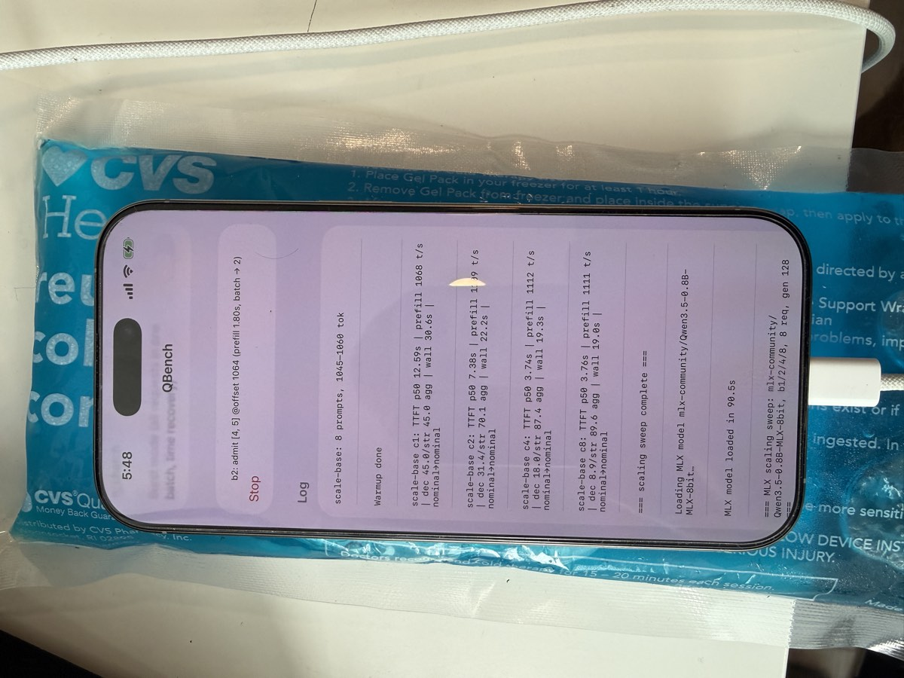

TL;DR: I improved multi-agent batching on iOS by implementing vLLM-style continuous batching in native Swift on MLX.
I've written a lot about the tokenomics of local LLMs and agent swarms. The short version: every forward pass uses the same memory bandwidth whether you're decoding one stream or eight, so concurrent agent work should share a batch. I ported vLLM's continuous-batching architecture to pure Swift for iOS — vllm-ios, native on MLX, 88% faster than llama.cpp at 8 concurrent streams with identical weights.
vLLM-style continuous batching for iPhone. Native Swift on MLX, no Python.
The end result first. SwarmBench, the repo's demo app: one question fans out to eight specialist agents (key facts, plan, risks, contrarian, and so on), all answering at once.
Every card you see streaming is a row in a single batched decode:
- All eight agents share one weight read per token
- The shared prompt prefix is prefilled once, cached, and reused
- Tokens stream to each card as they materialize
- Agents finish independently and exit the batch early
In this clip: 8 agents, 385 tokens, 2.9 seconds, on the phone's silicon alone. The rest of this post is how the engine behind it got built, and the benchmarks it exists to win.
To be clear, 8 subagents answering the same question isn't terribly useful, but it demonstrates the multi-agent inference performance that other workflows can leverage: agents each reading a different document, map-reduce over a corpus, a planner and its critics running side by side, speculative branches you throw away. The benchmarks below use exactly that shape: my travel app's research agents, each reading a different 1,000-token blog excerpt and extracting ~128 tokens of structured JSON.
Batched inference on iOS is surprisingly bad
The two serious runtimes fail in opposite ways. MLX has the fastest kernels but no multi-sequence serving on iOS — one stream per model. (Python mlx-lm has batching; a Swift port has been stuck in review since May.) llama.cpp has excellent continuous batching, but its Metal kernels barely reward it on A-series silicon. Measured with Qwen3.5-0.8B, greedy decoding, on an iPhone 16 Pro, thermally controlled:
| Runtime, 4-bit | 1 stream | 8 streams (aggregate) | Speedup |
|---|---|---|---|
| llama.cpp (Q4_K_M) | 54 tok/s | 78 tok/s | 1.4x |
| MLX (stock) | 103 tok/s | n/a — no batching | 1.0x |
A 1.4x return on 8x the parallelism, or none at all. The same idea on a Mac (vllm-mlx) gets 4.3x at 16 requests.
iphones get hot fast
On iOS you want inference over as soon as possible. A full-tilt GPU pulls ~10 watts, heats the phone, drains the battery, and dies when the user backgrounds the app. I measure roughly 15-20 seconds of full-speed GPU per minute before throttling — a 20-25 second burst takes the phone from cool to throttled. That's the real argument for batching: sixteen requests in one 25-second burn fit a single thermal budget; poor concurrency burns two or three, with later requests throttled.

So I rewrote vLLM's scheduler in Swift
Fast kernels with no scheduler (MLX), or a great scheduler with slow kernels (llama.cpp). Kernels are hard; schedulers are a few hundred lines. Easy call. The engine is ~300 lines of Swift on mlx-swift-lm: requests join at token boundaries, finished ones exit immediately, stock kernels underneath. The trick that avoids touching model code is uniform-offset batching — every sequence shares the same KV offset so the stock causal mask works. Late arrivals get left-padded, prefilled solo, then spliced in by KV cache surgery on the public API. With greedy decoding, several steps chain into one lazy on-GPU graph so you sync once per chunk instead of per token.
What the phone can actually do
With a real scheduler on the fast kernels, scaling shows up (thermally clean, zero measurable scheduling overhead):
| Batch size | Per-stream | Aggregate decode | Speedup |
|---|---|---|---|
| 1 | 103 tok/s | 103 tok/s | 1.0x |
| 2 | 84 tok/s | 168 tok/s | 1.6x |
| 8 | 25 tok/s | 199 tok/s | 1.9x |
At 8-bit the gap widens: 51 → 169 tok/s (3.3x) vs llama.cpp's 45 → 90 (2.0x) on identical weights. Batch 2 is the sweet spot — 84% of max aggregate while each stream stays 3.4x faster than at batch 8. And for this prefill-heavy workload, wall-clock barely moves with batch size (26.6s at B=2 vs 25.2s at B=8); small batches just return the first result sooner.
An aside worth pulling out: across everything we measured, quantization and batching are the two levers that actually matter for local inference speed, and they're the same lever twice. Decode is memory-bandwidth-bound, so quantization shrinks the bytes every token must stream (8-bit → 4-bit took single-stream from 51 to 103 tok/s, tracking file size almost exactly), and batching splits those bytes across streams (103 → 199 aggregate at batch 8). They multiply: 51 → 199 tok/s, a 3.9x swing on the same silicon, from just those two knobs. Everything else we tuned — flash attention, KV layouts, chunk sizes, sync elimination — moved the numbers by single-digit percentages.
Bottom line: 16 research requests, ~17k prompt tokens in and 2k tokens of JSON out, in 25 seconds, thermally stable. The llama.cpp baseline needed 47 seconds for half as many requests — two thermal budgets instead of one.
The scoreboard
Same phone, weight-identical 8-bit models, 1–8 concurrent streams. The gap between "batching exists" and "batching works":
Local AI is less hardware-limited than we think: this phone's silicon had 4x more to give than any off-the-shelf stack would extract, and every gain came from co-designing the harness with the hardware. Batching, because decode is bandwidth-bound. Bursts, because the thermal budget is 15-20 seconds a minute. Prefix caching, because agent prompts share structure. And the table is still full: kernel fusion, calibrated quants, a Neural Engine sitting idle. The phone in your pocket runs sixteen research agents in one thermal budget with vllm-ios. The next multiple is waiting on software shaped like the silicon.